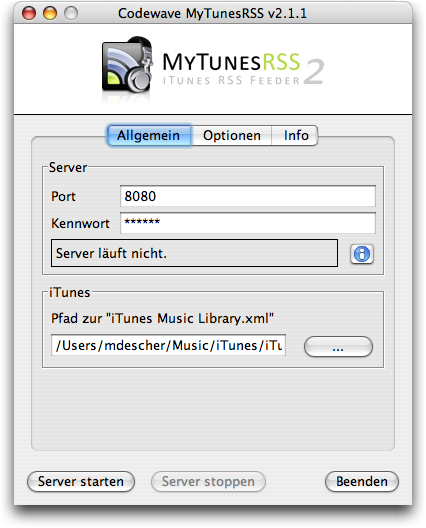
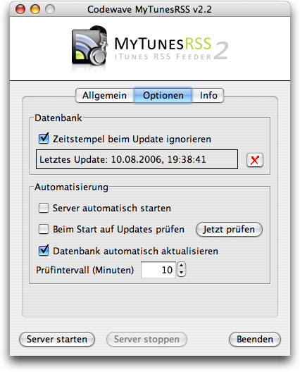
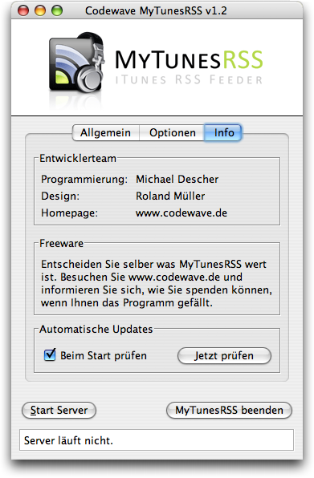
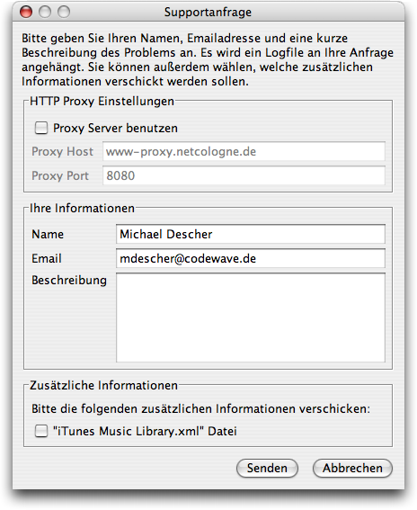
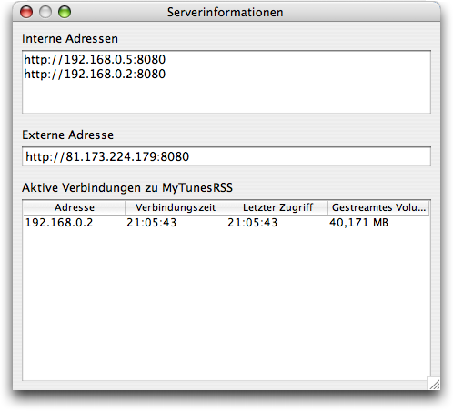

Die Konfiguration
Nach dem Start der Anwendung sehen Sie die Konfigurationsoberfläche. Die Einstellungen sind auf drei Seiten verteilt. Auf der ersten Seite befinden sich die allgemeinen Einstellungen.
Sie können den Port, auf dem der Server auf Verbindungen wartet, frei wählen. Der Standardport 8080 des Servers sollte in den meisten Fällen problemlos funktionieren. Auf manchen Systemen kann die Benutzung von Portnummern unter 1024 eingeschränkt sein.
Sie müssen zur Sicherheit ein Kennwort für den Zugriff auf die Webapplikation vergeben. Ohne ein Kennwort kann der Server nicht gestartet werden. Das Kennwort wird unverschlüsselt gespeichert. Verwenden Sie daher bitte möglichst kein Kennwort, das sie an anderer Stelle für den Schutz von kritischen Daten verwenden.
Im unteren Teil der allgemeinen Einstellungen müssen Sie den Pfad zu der Datei "iTunes Music Library.xml" auf Ihrem System angeben.Sie können den Pfad direkt in das Eingabefeld schreiben oder mit dem (...) Knopf suchen und auswählen. Beim ersten Start von MyTunesRSS - wenn sie keine ältere Version bereits installiert hatten - wird die Datei automatisch gesucht und, wenn sie gefunden wurde, eingetragen.
Auf der zweiten Seite finden Sie weitere Optionen. Als oberstes wird der Status der in MyTunesRSS integrierten Datenbank angezeigt. In dieser Datenbank hält MyTunesRSS eine Kopie der Daten aus der "iTunes Music Library.xml". Diese Datenbank wird automatisch beim Start des Servers erzeugt bzw. aktualisiert. Normalerweise werden nur Titel aktualisiert, die ein Änderungsdatum nach dem Datum des letzten Updates haben. Unter bestimmten Umständen kann es vorkommen, dass iTunes Daten ändert, ohne das Änderungsdatum zu aktualisieren. Wenn Sie feststellen, dass MyTunesRSS nicht die aktuellen Daten anzeigt, wählen Sie einfach die Option zum Ignorieren der Zeitstempel. Ein Datenbankupdate wird dann je nach Größe Ihrer iTunes Bibliothek länger dauern. Wenn sie feststellen, dass das Update mit gewählter Option schnell genug ist, können Sie sie auch gewählt lassen, um sicher zu sein, dass die Daten in MyTunesRSS immer aktuell sind. Wie Sie extreme Probleme mit der Datenbank haben, können Sie diese mit dem Knopf neben dem Status komplett löschen und neu erstellen. Beachten Sie jedoch, dass in MyTunesRSS erstellte Playlisten dadurch verloren gehen.
Unter "Automatisierung" könnnen Sie wählen, ob der integrierte Server beim Start von MyTunesRSS automatisch gestartet werden soll. Mit dieser Option können Sie MyTunesRSS in die Startobjekte Ihres Systems legen und damit beim Systemstart direkt komplett einsatzbereit machen. Weiterhin können Sie bestimmen, ob beim Start der Anwendung automatisch nach neueren Versionen von MyTunesRSS gesucht werden soll. Diese Option steht nicht zur Verfügung, wenn Sie den Server automatisch starten lassen. Sie können hier auch manuell nach einer neuen Version suchen. Bei laufendem Server können Änderungen an iTunes optional automatisch in die MyTunesRSS Datenbank übernommen werden. Aktivieren Sie die entsprechende Option und legen Sie fest, alle wieviel Minuten MyTunesRSS nach Änderungen an der "iTunes Music Library.xml" schauen soll. Dieses ist die Zeit zwischen dem Ende eines Updates und dem Beginn der nächsten Prüfung, d.h. wenn ein Update 5 Minuten dauert und die Zeit auf 10 Minuten gestellt ist, beginnt die zweite Prüfung 15 Minuten nach dem Start der ersten.
Auf der dritten Seite finden Sie Informationen zum Entwicklerteam und die Bitte um eine Spende, falls das Programm Ihnen gefällt. Wenn Sie Probleme mit MyTunesRSS haben können Sie über den Button unten auf dem Tab online eine Supportanfrage stellen. Sie können auf dem Supportformular Ihren Namen, Ihre E-Mail-Adresse und eine Problembeschreibung angeben. Es wird immer eine Logdatei der Anwendung verschickt. Sie können bei Bedarf zusätzlich Ihre "iTunes Music Library.xml" Datei in die Anfrage einbeziehen. Diese kann teilweise helfen Probleme zu lösen. Wenn Sie über einen Proxyserver mit dem Internet verbunden sind, müssen Sie diesen oben im Formular konfigurieren. Das gleiche Formular erscheint auch bei jedem unerwarteten Fehler, um einen Fehlerbericht senden zu können.
Unter den Konfigurationsseiten befinden sich die Knöpfe zum Starten und Stoppen des Servers und zum Beenden der Anwendung. Während der Server läuft, können Sie keine Einstellungen verändern. Üblicherweise haben Sie eine einzige lokale Adresse (z.B. 192.168.0.2) über die MyTunesRSS mit einem Browser erreichbar ist. Wenn Sie mehrere Netzwerkschnittstellen haben (z.B. ein LAN und ein WLAN), dann haben Sie auch mehrere lokale Adressen. Es wird nur eine davon in der Statuszeile angezeigt. Wenn Sie alle lokalen Adressen sehen möchten, klicken Sie auf den Informationsknopf neben der Statusanzeige. Es wird auch Ihre externe Adresse angezeigt, wenn Sie mit dem Internet verbunden sind und die Adresse ermittelt werden kann. Im Statusfenster werden außerdem alle aktuellen Verbindungen zu MyTunesRSS angezeigt.
Beim Beenden des Programmes wird ein eventuell noch laufender Server zuerst gestoppt. Die Fensterposition und sämtliche Einstellunegn werden automatisch für den nächsten Start gespeichert.